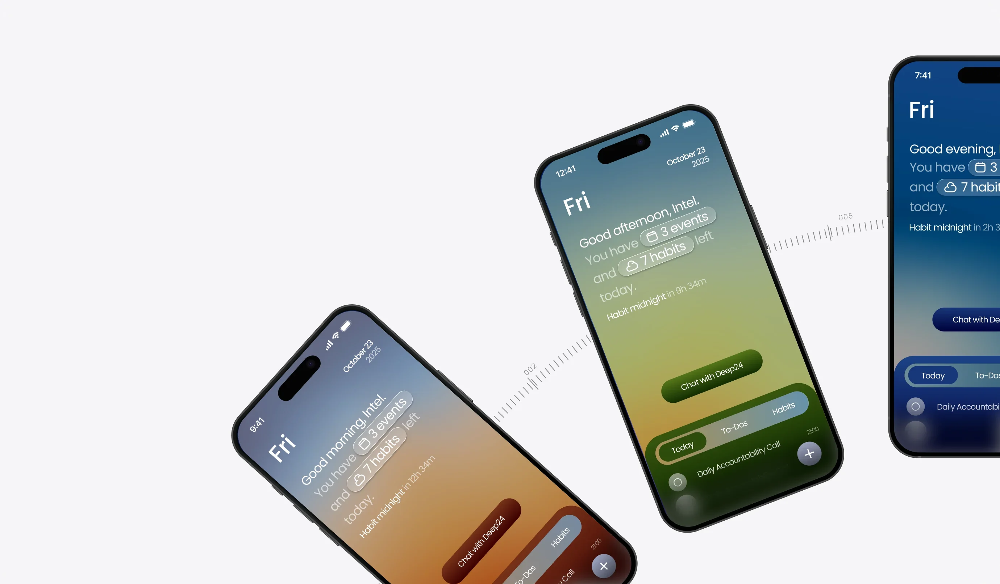

01
Cohesive visual identity
A distinctive sky-based visual system that unified the product across features and screens.


A founding design project shaping the visual identity, interaction patterns, and evolving feature set of an iOS productivity app focused on coaching well-being.
A distinctive sky-based visual system that unified the product across features and screens.
Reorganized layouts and interaction patterns so core actions are easy to find and understand.
A flexible framework that survived a major product pivot without fragmenting the experience.

I joined Deep24 as its founding designer during early development, when the core features worked but the product had no cohesive design system.
I built its visual identity, restructured core UX flows, and designed new features as the product evolved, working closely with the two engineers.
Deep24 was functionally robust, but as it grew, its core actions got harder to read.
When I joined, the app was functional, but visually fragmented. Key features were often overlooked because of the disjointed interface.


How might we give Deep24 one cohesive identity—and make its core actions easy to find, even as the product keeps changing?
Rather than one research sprint, Deep24 needed continuous landscape scanning as new features were proposed. I audited planning, habit, and messaging apps to see how they structure time, navigation, onboarding, and chat.
Calendars that embed tasks in time blocks, minimal layouts, gradual onboarding, and familiar chat patterns from iOS Messages and Instagram DMs.
Cramped navigation, ambiguous labels, and feature-heavy screens that competed for attention instead of guiding flow.
The strongest apps prioritize legibility and flow. This shaped Deep24’s navigation, layout, and interaction hierarchy.
Tasks live inside time blocks, so priorities read at a glance.
Messaging patterns people already know lower the friction.
Features arrive gradually, so new users aren’t overwhelmed.
Minimal screens that still feel intentional.
The developers asked for more dynamism, so I built a sky-based system: the background gradient shifts through the day, anchoring the interface in time and the app’s focus on daily rhythm.
Mornings start bright and energizing. Tones deepen as the day goes on, and by night the darkest gradients signal time to wind down.

Supporting every gradient across light and dark modes wasn’t practical for engineering. I cut the evening gradient and simplified the day-to-night transition. Later, the team committed fully to dark mode, which made the whole app more cohesive.

I explored two onboarding directions. The first leaned all the way into the sky; the second pulled back so the flow was easier to read at a glance.
Highly saturated colors, animated gradients, and moving stars and clouds. Cohesive with the sky theme, but it felt overly personalized and, as one developer put it, “too sparkly.”

I also explored an emotive star mascot here. The team felt it was too cutesy for the product’s tone, which started a bigger conversation about what kind of mascot, if any, fit Deep24.
Drawing from Greydients by Nuevo.Tokyo (shared by the dev team), I chose a cool slate gradient that put clarity, professionalism, and focus first.

As development moved on, I designed new core features, starting with the chat interface.
The developers gave me rough sketches of what they wanted. My job was to turn them into interactive screens that fit the visual system I’d already built.


Engineering pivoted and presented four entirely new home screen concepts. That meant a full visual overhaul and a new design direction.


Chat was the user’s direct line to their accountability coach, so it had to be instantly recognizable.
The original button floated above the nav bar with heavy gradients and shadows. Those effects actually made it blend into the interface, and it didn’t read as a chat button at all.
My first instinct was more emphasis: darker fills and extra cues to make it scream “this is the chat!” But those versions clashed or added complexity without making the interaction clearer.

If chat was the app’s central interaction, it should live inside the primary navigation.
So I built the button into the center of the nav bar with a subtle cut-out and floating treatment. It kept the hierarchy clean while making chat the hub of the product.

I delivered three distinct visual styles, each balancing clarity, warmth, and scalability. The developers liked “editorial soft glass” best.

![Direction 2, editorial soft glass: bold DEEP[24] type over warm orange, green and blue gradients behind frosted cards. Handwritten note: the devs liked this style the best!](https://raw.githubusercontent.com/melodysz/baubles/main/deep24/editorial.webp)

In a living product, early visual choices shape everything after. The sky system had to hold up through new features and a full pivot.
Working alongside active development taught me to prioritize flexibility and plan for features that don’t exist yet.
The chat button wasn’t a styling issue. Moving it into the nav fixed what extra gradients couldn’t.
I care about shaping not just how an interface looks, but how it evolves over time.
Fin.